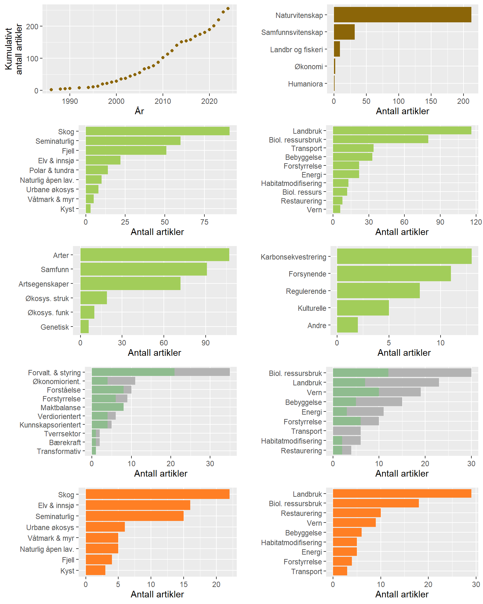

Effekter av arealbruk og arealbruksendringer på biodiversitet, økosystemtjenester og karbonlagring i Norge - Et systematisk kart og beslutningsstøtteverktøy
Oppsummering for beslutningstakere
Bakgrunn
Nedbygging av arealer og endringer i menneskelig arealbruk vurderes som den viktigste årsaken til tilbakegang og tap av arter og naturtyper både globalt og i Norge. Arealendringer påvirker økosystemenes sammensetning, struktur og funksjon, og påvirker dermed økosystemenes evne til å produsere ulike goder og tjenester vi mennesker får fra naturen –omtalt som naturgoder eller økosystemtjenester. Det kanskje mest omtalte naturgodet i senere år er klimaregulering, der opptak og lagring av karbon i økosystemene er sentrale faktorer. Litt i underkant av 2% av Norges areal er i 2024 utbygd med veier, infrastruktur, bebyggelse og annet sterkt endret areal. Andelen er høyere enn i verden forøvrig (1%) men lavere enn gjennomsnittet i EU (4%). Byer og tettsteder var i vekst i hele forrige århundre, og bebygd areal i dag jevnt økende. I perioden 1990-2019 ble det totalt bygget ned 1 500 km2, som tilsvarer litt under 50 km2 årlig. Grunnleggende kunnskap om utbygging, endringer i arealbruk og andre arealbruksendringer er grunnlaget for i neste omgang å vurdere hvilken virkning disse endringene har for naturmangfold og økosystemtjenester.
Systematiske kart identifiserer hvilke tema hvor det er gjort my forskning og hvilke tema det er forsker lite på. En slik oversikt kan blant annet benyttes til å vurdere hvor det er nødvendig med ytterligere innsats for å øke kunnskapen. Vi har i dette prosjektet utviklet et systematisk kart over tilgjengelig kunnskap knyttet til effekter av arealbruk og arealbruksendringer på biodiversitet og økosystemtjenester inkludert karbonlagring i Norge. Vår oversikt inkluderer også forskning som fokuserer på konflikter og styring knyttet til arealbruk, samt verktøy for planlegging og forvaltning.
Oversikten vi har framskaffet, er basert på en detaljert protokoll og stringente regler for litteratursøk, inkludert kriterier for hvilke vitenskapelige artikler som skal inkluderes i det systematiske kartet, og hvilken informasjon som skal trekkes ut fra de inkluderte artiklene. Vi utformet søk og inkluderingskriterier med tanke på å fange opp alle relevante vitenskapelige artikler fra Norge, Sverige og Finland, samt alle publikasjoner som allerede har sammenstilt relevant litteratur (systematiske oversiktsartikler) så lenge de hadde et globalt, europeisk eller norsk fokus. Som et ledd i utviklingen av protokollen, gjennomførte vi et arbeidsverksted hvor ulike samfunnsinteresser deltok. Etter verkstedet mottok vi skriftlig tilbakemelding på protokollen fra både deltakere på verksted, samt en utvidet ekspertgruppe bestående av forskere. Dette ble gjort for å sikre at protokollen var tilstrekkelig definert til å fange opp litteratur av interesse. Protokollen er åpent tilgjengelig her.
Oppsummering av resultatene
Oversikt over det samlede materialet fra Norge
Totalt ble 255 artikler fra Norge inkludert etter at screening var gjennomført. Det har vært et økende antall artikler publisert pr år, men økningen er liten gitt det økte fokuset på betydningen av arealbruk for biodiversitet og økosystemtjenester. I vårt materiale er det en stor overvekt av forskning som faller inn under fagdisiplinen matematikk og naturvitenskap, mens samfunnsvitenskapelige studier i mindre grad er representert.
Sammenstilling av den naturvitenskapelige forskningen fra Norge
Totalt ble 191 artikler som omhandlet naturvitenskapelige tema inkludert. De hyppigst studerte økosystemene i vårt materiale er skog etterfulgt av semi-naturlige økosystemer og fjell, mens øvrige økosystemtypene er langt mindre representert. Når det gjelder ulike former for arealbruk og arealbruksendringer er det effekter av landbruk og biologisk ressursutnyttelse som er mest studert. Dersom vi bryter opp arealbruken i finere inndeling finner vi at det er særlig effekt av skogbruk (biologisk ressursutnyttelse) og beiting (landbruk) som er mye studert. Til sammenlikning er de øvrige formene for arealbruk, inkludert effekten av energiproduksjon, langt mindre representert i materialet. Det er også svært få naturvitenskapelige artikler som omhandler betydningen av vern eller restaurering. Videre avdekker vår gjennomgang at det er flest studier arters populasjoner, artssamfunn eller artsegenskaper, mens det er færre studier på økosystem-nivå (både struktur og funksjon). Det er også svært få studier som har undersøkt effekter på genetisk sammensetning. Et mindre antall studier fokuserer på effekter på økosystemtjenester, hvorav de fleste omhandler karbonopptak og få omhandlet opplevelses- og kunnskapstjenester. Vår gjennomgang viste videre at flertallet av studiene er basert på det som ofte karakteriseres som svake forsøksdesign. Det er en overvekt av studier på lokal- eller regional skala og få studier som har inkludert data fra hele landet, og de fleste studiene er basert på korte tidsserier. Kun et fåtall av studiene har gjort data- og kildekode tilgjengelig i etterkant av studiet, noe som er hemmende på videre utvikling av fagfeltet.
Viktige trekk ved studier som fokuserer på styring, verktøy og konflikter
Totalt ble 73 artikler som fokuserte på samfunnsrelaterte problemstillinger inkludert, hvorav 32 benyttet samfunnsvitenskapelige metoder. Vår gjennomgang avdekket en overvekt av studier med en analytisk tilnærming som fokuserer på styring og forvaltning. Færre studier vektlegger analytiske tilnærminger knyttet til verdier, kunnskap, bærekraft, tverrsektorielle prosesser og gjennomgripende endringer. Også i denne delen av litteraturen var det flest studier som fokuserte på bruk av biologiske ressurser (særlig skogbruk, men også jakt og fiske) samt jordbruk (særlig jordbruksproduksjon). Sammenliknet med den naturvitenskapelige litteraturen var det en høyere andel som fokuserte på vern. Fordelt på hovedøkosystemer er det flest studier fra skog-, fjell- og semi-naturlige økosystemer. Samlet for den samfunnsvitenskapelige litteraturen fant vi at flere studier fokuserte på styring og verktøy og få som omhandlet konflikter. De hyppigst benyttede metodene i vårt materiale var intervjuer og dokumentstudier.
En gjennomgang av eksisterende systematiske litteratursammenstillinger
Vår gjennomgang av eksisterende systematiske litteratursammenstillinger fanget opp totalt 60 artikler, hvorav 20 var metaanalyser basert på systematiske litteraturgjennomganger. Disse studiene fokuserer i stor grad på skog, elv og innsjø, eller semi-naturlige økosystemer. I likhet med den naturvitenskapelige primærlitteraturen omhandlet mange systematiske litteratursammenstillinger effekter av landbruk (produksjon og beiting) og biologisk ressursutnyttelse (inkludert skogbruk). Det var også en høyere andel av artiklene i denne kategorien som omhandlet betydningen av vern og restaurering. Vår gjennomgang avdekket at en lav andel av de eksisterende systematiske litteratursammenstillingene har benyttet seg av metoder for å vurdere risiko for publiseringsskjevhet og andre faktorer som kan gjøre materialet mindre egnet til å trekke sikre slutninger.
Datahull og kunnskapsmangler
Generelt finner vi at det er et udekket behov for systematiske litteratursammenstillinger og metaanalyser på mer avgrensede tema, som baserer seg på de best tilgjengelige metoder for slike studier og inkluderer en kritisk vurdering av de inkluderte artiklene. På et overordnet plan mangler det innenfor naturvitenskapen studier med en eksperimentell tilnærming som er egnet til å avdekke årsaks-virkningsforhold, det er få studier som undersøker effekter av arealbruk på nasjonal skala, det er generelt en mangel på studier som baserer sine analyser på lange tidsserier, og det er en stor forskjell i mengden forskning fra ulike fylker. Tematisk finner vi at det er få studier som har undersøkt effekter av vern og restaurering, og at det er relativt få studier som har studert effekter av ulike former for kraftproduksjon med tanke på den samfunnsmessige betydningen dette har. Det er også stor forskjell i forskningsvolum mellom ulike økosystemer, med et lavt volum i kystnære økosystemer og i myr og våtmark. Det er relativt få studier som har undersøkt effekten av arealbruk på økosystemtjenester, inkludert karbonopptak og lagring. Sammenstillingen vår avdekte en generelt mangelfull kunnskapsstatus om de samfunnsmessige forholdene knyttet til effekter av arealbruk og arealbruksendringer på naturmangfold og økosystemtjenester, og at det samlet sett er få samfunnsvitenskapelige studier som undersøker konflikter, forvaltningsverktøy og styring. Søket vårt identifiserte også få samfunnsrelaterte studier på enkelte tema som har fått mye politisk oppmerksomhet de siste årene, inkludert effekter av arealbruk og arealbruksendringer på karbonlagring og effekter av vindkraft. Videre er det få studier som benytter analytiske tilnærminger knyttet til gjennomgripende endringer, tverrsektorielle prosesser, bærekraft, kunnskap, verdier, maktrelasjoner og deltagende prosesser, til tross for at disse fremheves i den internasjonale samfunnsfaglige litteraturen.
Vår systematiske sammenstilling av litteraturen har gitt en fyldig oversikt over hvilke tema vi har mye forskningsbasert kunnskap om og hvilke tema det er lite kunnskap om. Sammenstillingen skiller seg fra tidligere norske kunnskapssammenstillinger ved at vi identifiserer studier som dreier seg om effektene av arealbruk biodiversitet og økosystemtjenester. Sammenstillingen har avdekket en rekke områder og tema hvor det er lite forskningsbasert kunnskap tilgjengelig. Mange av disse tema har også stor betydning for kunnskapsbasert arealforvaltning, og bør vektlegges i framtidig prioritering av forskning og kunnskapsoppbygging.